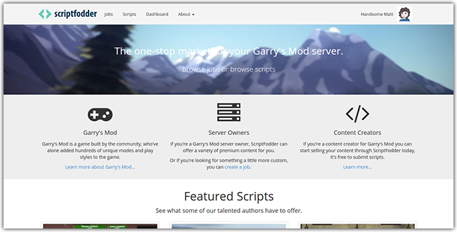
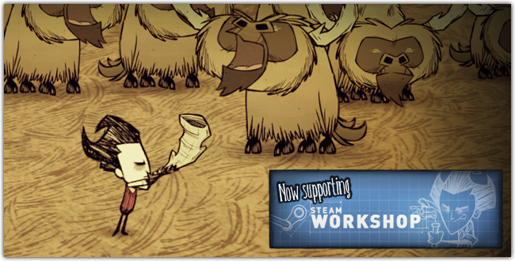
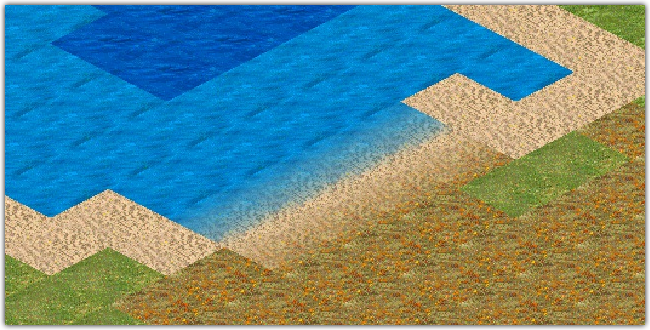
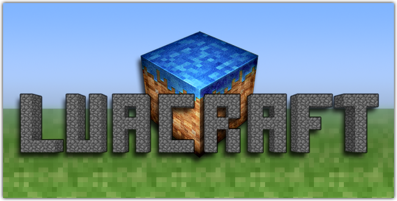

A small collection of projects I've made or contributed to.
email: matt [at] handsomematt [dot] co [dot] uk
twitter: @_HandsomeMatt

A marketplace for Garry's Mod developers and server owners to buy and sell scripts relating to Garry's Mod. The site handles thousands of dollars worth of transactions every single month and is the single biggest website of its kind.

A project I started in late 2012 following the release of Don't Starve. The set of tools provided a way for modders to import/export game textures to the game allowing for a variety of different mods to be created. Later with support from the games developers we devised a set of official tools distributed through Steam. The game is now one of the few to use Steam Workshop to allow distribution of mods.

An ambitious open source remake of Age of Empires 2 using C# and OpenGL. Many of the original file formats have been reverse engineered and can be opened using the source code included.

By implementing and using LuaJ 3, a leading Java lua VM with Lua 5.2 features, LuaCraft is a fast and powerful scripting modification for Minecraft.